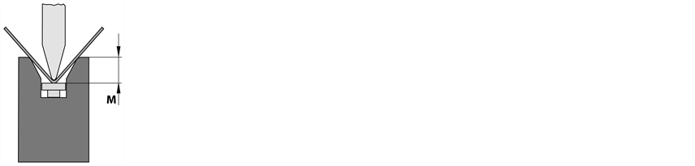

{kind=link}
En este registro pueden hacerse correcciones del portapunzón. Las correcciones de ángulo están divididas en las siguientes áreas:
En esta área puede corregirse la posición y los parámetros del portapunzón del eje Y (trancha superior).
- Y absoluto
- Y relativo
Con esta opción puede corregirse la posición del valor real del portapunzón. Es la distancia entre el borde inferior de la herramienta superior y el borde superior de la herramienta inferior. La corrección del eje izquierdo (Y1) y derecho (Y2) puede hacerse por separado o como grupo para ambos ejes.

Ajuste de precisión de la posición de eje registrada.
En esta área puede corregirse la posición del portapunzón del eje M (herramienta inferior).
- M absoluto
- M relativo
Con esta opción puede corregirse la posición del valor real del borde superior del sistema de cuñas. Es la distancia entre el borde superior del sistema de cuñas y el borde superior de la mesa de prensa.

Ajuste de precisión de la posición de eje registrada.
En esta área pueden corregirse los parámetros generales del portapunzón.
- Punto muerto superior
- min.: Grosor de chapa + 1,0 mm
- máx.: <Posición máxima Y1 o Y2
- Punto de conmutación descendente
- min.: Punto de seguridad
- máx.: <Posición máxima Y1 o Y2
- Punto de sujeción
- min.: 50% del grosor de chapa
- máx.: < punto de conmutación
Define la posición del portapunzón al final del ciclo de doblado.
Influye en el cambio de la velocidad de marcha rápida a la velocidad de marcha lenta de la trancha superior. Esta opción eleva el cambio de marcha rápida a marcha lenta.
Define la posición para sujetar la pieza a doblar. Es importante si se ha programado un retroceso o se han activado los dispositivos auxiliares para doblar.
- Punto de conmutación ascendente
- min.: Posición Y programada
- max.: Posición máxima
- Velocidad de doblado descendente
- min.: 0,5 mm/s
- max.: 10,0 mm/s
- Velocidad de doblado ascendente
- min.: 0,5 mm/s
- max.: 10,0 mm/
- Fuerza de presión
- min.: 0,0 t
- máx.: < Limitado por la fuerza de presión máxima de la máquina y la carga máxima de las herramientas.
- Tiempo de prensado
Define el recorrido que sube la trancha superior con una velocidad definida antes de conmutar a marcha rápida.
Poniendo en parámetro Velocidad de doblado ascendente a un valor de <10 mm/s se pone el valor del Punto de conmutación ascendente automáticamente al grosor de chapa.
Define la velocidad de doblado descendente.
La velocidad máxima se reduce estando activo el dispositivo auxiliar para doblar (en dependencia del eje alfa).
Define la velocidad de doblado ascendente.
Esta velocidad sólo actúa si también se ha puesto el parámetro Punto de conmutación ascendente a > PMI. Poniendo en parámetro de Doblado El doblado es un elemento de la programación de perfiles y designa un cambio de forma en la pieza a mecanizar. Es posible asignar varios atributos a un doblado. Longitud de lado, ángulo de doblado, radio de doblado (optativo), ángulo de predoblado (optativo), atributos adicionales (optativo). Un doblado puede constar de varios procesos de doblado. ascendente a un valor de <10 mm/s se pone el valor del Punto de conmutación ascendente automáticamente al grosor de chapa.
Define la fuerza que hay que aplicar para doblar la pieza.
Define el tiempo que permanece la trancha superior en el punto muerto inferior (PMI)
min.: 0,0 s
max.: 10 s (configurable)
- Parada punto muerto inferior
- No hay carrera de portapunzón
- Factor de bombeado
- min.: 0,0
- max.: < 10
Activando este parámetro permanece la trancha superior en el punto muerto inferior hasta que el usuario active el aparato de mando (interruptor de pedal o pulsador a dos manos). La trancha superior se desplaza al punto muerto superior programado en el momento en que se suelte el aparato de mando.
Activando el parámetro no se mueve la trancha superior durante el proceso actual. Ello permite poder hacer movimientos complejos de la periferia a nivel de aplicación preparándose para el siguiente paso del proceso. Ello puede ser útil, por ejemplo, con celdas de doblado de robot para el cambio de posición de los ejes.
Adaptacion del bombeado
<1 - Se reduce el bombeado
>1 - Aumenta el bombeado